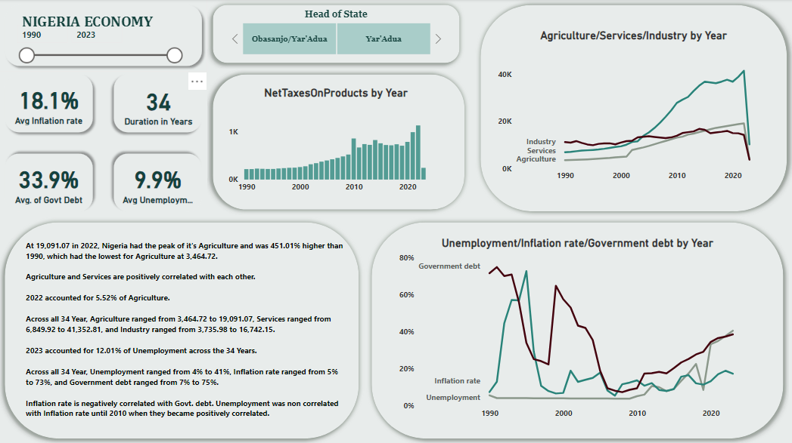

Power BI / Historical exploration / 1990-2023
Nigeria: economic indicators
A long-run view of sector indicators and macroeconomic rates, with explicit limits on comparability and interpretation.

Analytical question
How do the displayed sector indicators and macroeconomic rates vary over the 1990-2023 period? This is a descriptive historical exploration, not an assessment of the causal effect of a government or president.
Approach
The published project describes four tables cleaned and transformed in Power Query, then visualized in Power BI. The dashboard brings together sector series, inflation, unemployment, government debt and net taxes. The underlying table definitions and source files are not supplied on the public project.
What the dashboard shows
Services and agriculture rise across much of the displayed period; services reaches the highest displayed sector value. The published description reports agriculture at 3,464.72 in 1990 and 19,091.07 in 2022. The rate charts show substantial variation over time. Several series drop sharply at the final observation, which should be investigated before interpreting that endpoint.
Recommended next analysis
Establish units, price basis and completeness for each sector series before calculating real growth. Align time coverage and definitions before comparing unemployment, inflation or debt. Examine annual changes and clearly defined debt ratios rather than summing percentages. Review the final-year source records to distinguish economic movement from partial coverage.
Reading the original visual
The original screenshot is preserved as a historical dashboard output. Its statements assigning a year a share of total unemployment or inflation should not be interpreted as economic shares: annual rates are not additive quantities. Common upward trends do not demonstrate causation or a quantified correlation. Sector units and price basis are undocumented here, so the displayed increase is not presented as inflation-adjusted growth. Presidential labels are temporal context, not causal evidence.
Source: My original Maven Showcase project ↗. Analysis accompanies the published dashboard; source workbooks are not included.